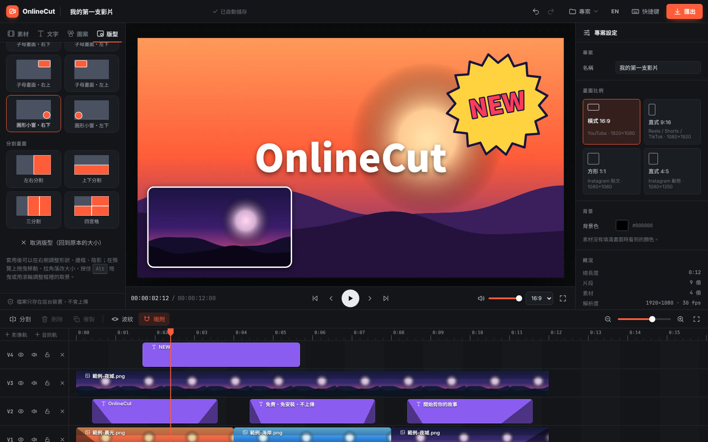

多軌時間軸
影片、圖片、文字、音樂各自一條軌，拖曳移動、拉邊緣修剪，按 S 在播放頭分割。片段會自動吸附對齊。
免費 · 免安裝 · 沒有浮水印
多軌時間軸、文字字幕、濾鏡、變速、淡入淡出，一次匯出成 MP4。所有處理都在你的電腦上完成，影片不會上傳到任何地方。
不用註冊帳號。建議使用電腦版 Chrome、Edge 或 Safari。

功能
不塞滿用不到的按鈕。常用的功能做好、做順手。
影片、圖片、文字、音樂各自一條軌，拖曳移動、拉邊緣修剪，按 S 在播放頭分割。片段會自動吸附對齊。
大標題、字幕條、描邊大字等樣板，一鍵加入。在畫面上點兩下就能直接改字、換字型，也能拖曳位置。
亮度、對比、飽和度、黑白、模糊，加上鮮豔、柔和、高對比等預設，預覽即時更新。
看得到波形的音訊軌，音量可以放大到 200%，片段淡入淡出、整條軌道靜音。
0.25× 到 4× 變速，畫面與聲音的淡入淡出，用重疊軌道做出交叉溶接。
每一格都重新渲染後編碼成 H.264 MP4，最高 1080p 60fps。直式 9:16、方形 1:1 都支援。
子母畫面、圓形小窗、左右 / 上下分割、三分割、四宮格，一鍵套用。形狀、邊框、陰影可調，在畫面上直接拖曳、調整取景。
可以改字的爆炸標、對話框、姓名字幕條，加上漸層、星空等背景，愛心、王冠等貼圖，拍立得、漫畫集中線等邊框。向量圖，放大也清楚。
專案自動存在瀏覽器裡，重新整理接著剪。也能下載成 .onlinecut 專案檔，備份或帶到另一台電腦。
隱私
OnlineCut 沒有伺服器幫你處理影片。匯入、預覽、剪輯、輸出 MP4，全部由瀏覽器在你的裝置上完成。
專案和素材會存在這台裝置的瀏覽器裡，下次打開會接著上次的進度。想備份或換電腦繼續剪，可以下載專案檔（.onlinecut），裡面包含所有素材，在另一台電腦開啟就能接著做。
怎麼用
把影片、音樂、圖片拖進視窗。直式影片會自動切換成 9:16 畫面。
拖曳排列、修剪、分割，加上文字和音樂。按空白鍵隨時預覽。
選好解析度按下匯出，完成後直接下載，可以上傳到任何平台。
常見問題
是的。沒有付費方案、沒有浮水印，匯出的影片也沒有長度限制。因為影片都在你的電腦上處理，我們不需要為伺服器付費，所以可以一直免費。原始碼以 MIT 授權公開在 GitHub。
你的瀏覽器能播放的格式都可以匯入：影片常見的是 MP4（H.264）、WebM、MOV；音樂是 MP3、WAV、M4A、OGG；圖片是 JPG、PNG、WebP、GIF、SVG。匯出的格式是 MP4（H.264）。
專案存在這台裝置瀏覽器的 IndexedDB 裡，只有你自己看得到。100MB 以下的素材會在背景複製一份到瀏覽器；更大的檔案不複製，不會多佔硬碟空間：Chrome、Edge 會記住檔案在電腦上的位置，下次開啟時點一下「允許讀取」就接回；其他瀏覽器則需要重新匯入一次（同一個檔案會自動接回）。
把兩段影片放在上下兩條影像軌、時間重疊，打開左側的「版型」分頁點一下想要的版型就好，下面那條軌是主畫面。套用後可以在右側調整形狀（方形、圓角、圓形）、邊框和陰影；在預覽上拖曳移動、拉角落調整大小，按住 Alt 拖曳或用滾輪調整框裡的取景。
可以。在編輯器右上角「專案 → 下載專案檔」，會得到一個 .onlinecut 檔，裡面是專案設定和所有素材（其實是一般的 ZIP 檔）。在任何電腦打開 OnlineCut，選「開啟專案檔」或直接把檔案拖進去就能繼續。不想檔案太大，也可以只存專案設定，開啟後再重新匯入同一批素材，編輯器會自動接回去。
在支援 WebCodecs 的瀏覽器（Chrome、Edge、Safari 等）上，影片會依序解碼、逐格渲染再編碼，通常比影片本身的長度還快，切到別的分頁也會繼續。瀏覽器不支援時會改用即時錄製，那就需要等完整播放一次，而且要留在這個分頁。
可以。匯入只讀取檔頭，幾乎是馬上完成；大檔案不會複製到瀏覽器，不會多佔你的硬碟空間。預覽和匯出都直接讀取原始檔案，聲音只解碼用得到的那一段，所以記憶體用量跟檔案大小無關。實際的匯出速度取決於你電腦解碼這支影片的速度，例如 4K 高位元率的影片會比 1080p 慢。
可以打開和操作，但時間軸需要精細的拖曳，用電腦搭配滑鼠或觸控板會順手很多。
沒有刻意設限，實際上取決於你電腦的記憶體：匯出時整個檔案會先放在記憶體裡再下載，很長的高畫質影片可能會不夠用，這時可以改用 720p 或「檔案小」畫質。